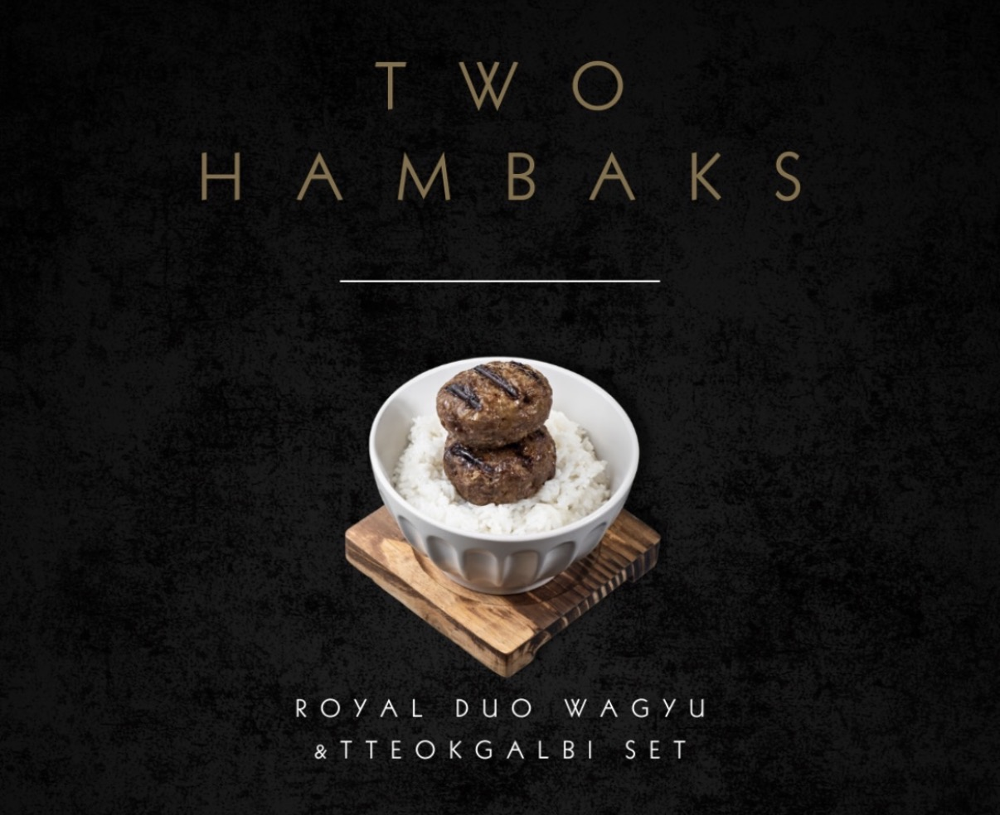

Signature Combo · Most loved
One set. Two signatures.
A complete Korean dining moment.
Wagyu Hamburg Steak and Tteokgalbi together with premium rice, Korean soup, six signature sauces, pickles, and egg. The safest, fullest way to discover SURA — designed for first-time guests.
Wagyu
Tteokgalbi
Rice
Soup
6 Sauces
See the full menu